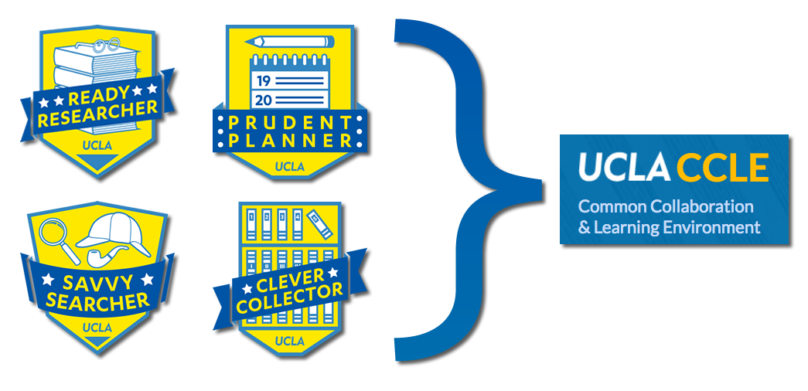

3½ things
about WI+RE
A very quick overview
❶
WI+RE
Writing Instruction + Research Education
WI+RE is a UCLA community focused on helping all learners succeed in their writing and research projects.
❷
WI+RE equips students
to create online learning modules.
In 2016-17, ❺ WI+RE students:
- Published 13 videos
- Helped code the WI+RE website
- Created 5 CCLE quizzes
- Presented 1 poster at a conference
videos
web pages and animations
illustrations

CCLE integration
In Fall 2017, 490 students attended Cornerstone Research Workshops
265 online, and 225 face-to-face
ty: Renee Romero & Simon Lee
handouts
❸
WI+RE has been helpful.
Office of Instructional Development
Center for Educational Assessment Report
Analysis of Faculty Engagement Interviews
- Faculty across the board had positive experiences
- Faculty expressed a preference for basic research & writing instruction outside of class time
- Course integration was wide-ranging
- Faculty affirmed student improvement
Office of Instructional Development Assessment Report
Analysis of student feedback on Psychology 131B pilot
- Students found the modules to be well designed, describing them as simple, straightforward, comprehensive, and well made.
- Students found the activities and strategies to be very helpful, appreciating the step-by-step process of developing a research question and seeking out resources.
Office of Instructional Development Assessment Report
Feedback from WI+RE Student Designers
Learning about the radically creative work happening behind the scenes at academic libraries has totally changed my career path for after graduate school.
Caitlin Meyer, MLIS 2017, Research & Education Librarian at Yale University.
#3½
WI+RE might be modular.
https://uclalibrary.github.io/research-tips/
ty: Amy Liu | Annie Pho | Annelie Rugg | Caitlin Meyer | Caroline Kong | Courtney Hoffner | David Shorter | Ding Yi | Elizabeth Cheney | Emily Appleton | Ginny Steel | Janet Goins | Joanna Chen Cham | Judy Consales | Julia Glassman | Kelly Kistner | Kelly Miller | Kumiko Haas | Leigh Harris | Marc Levis-Fitzgerald | Margarita Nafpaktitis | Mary Tran | Mike Franks | Miriam Posner | Nisha Mody | Renee Romero | Shannon Roux | Shushanik Stepanyan | Simon Lee | Taylor Harper | Tom Hitchner | Tony Aponte | Usability testers | Victor Fong | Whitney Arnold | Yalda Uhls
slides: https://dmcwo.github.io/slides/about-wire.htmlBuild imperfect solutions quickly and on purpose.
Be quick and practical.
Break down complexity.
Reveal hidden challenges
Expedite breakthroughs.
Deliver in diverse formats.
Speak with our own varied voices.
Experiment with what we have on hand.
Pursue universal design at every stage of the process.
Share our work openly.